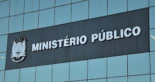

Bem-vindo ao Dia Internacional do Ministério Público
Defendendo a justiça, promovendo direitos, fortalecendo a cidadania.
O Papel do Ministério Público
O Ministério Público é a garantia de que a justiça será promovida e os direitos fundamentais protegidos. Sua missão vai muito além da atuação em processos judiciais, abrangendo áreas como:
- Defesa do meio ambiente
- Proteção aos direitos das crianças e adolescentes
- Combate à corrupção e ao crime organizado
- Promoção dos direitos humanos
Por que celebrar o Dia Internacional do Ministério Público?
O Dia Internacional do Ministério Público é uma oportunidade de destacar a importância dessa instituição para a sociedade. Em vários países, o MP atua como um defensor da democracia, ajudando a construir uma sociedade mais justa e equilibrada.
“Sem Ministério Público forte e independente, não há garantia de direitos.”
Fatos Interessantes
Confira alguns dados sobre a atuação do Ministério Público no Brasil e no mundo:
- 150 mil ações judiciais: só em 2023, o MP brasileiro ajuizou milhares de ações em defesa do meio ambiente.
- Presença global: o Ministério Público atua em mais de 120 países.
- Proteção de vulneráveis: o MP é fundamental na proteção de crianças, idosos e comunidades indígenas.
Como você pode contribuir?
Ajude a fortalecer o Ministério Público na sua região:
- Denuncie irregularidades e crimes.
- Participe de audiências públicas.
- Compartilhe informações sobre a importância do MP.
Seja um defensor dos direitos e ajude a construir um mundo mais justo!